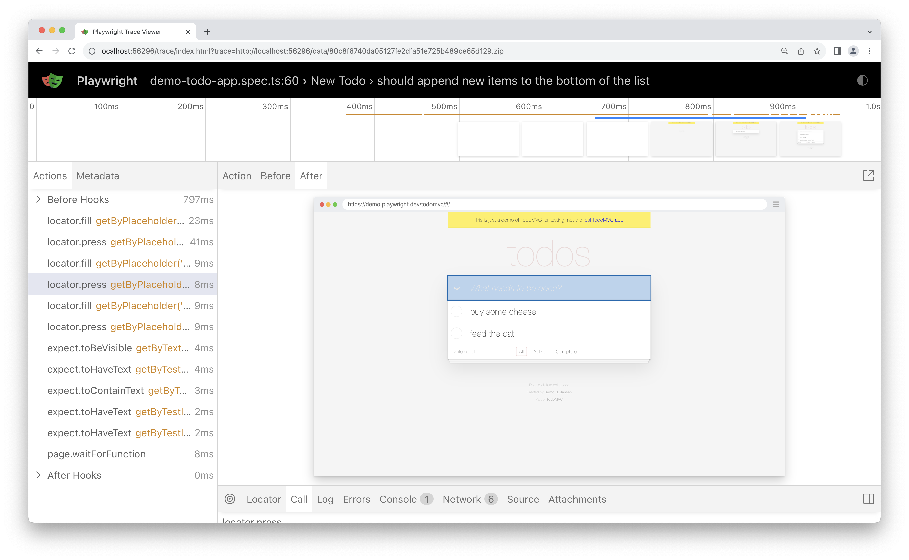
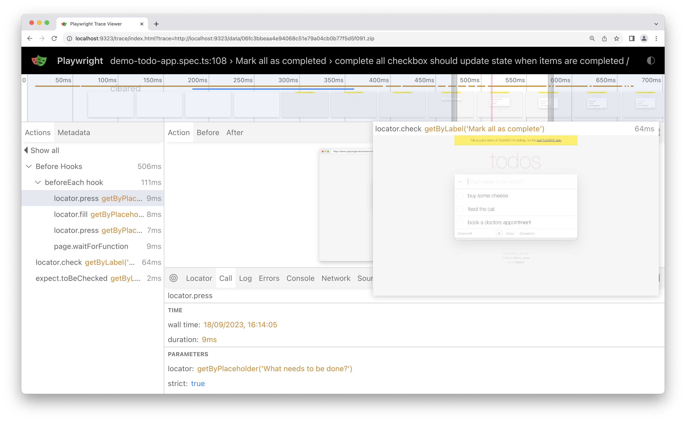
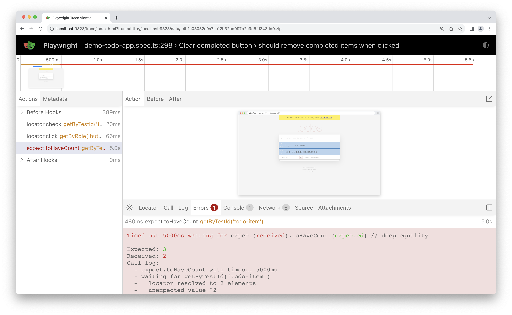
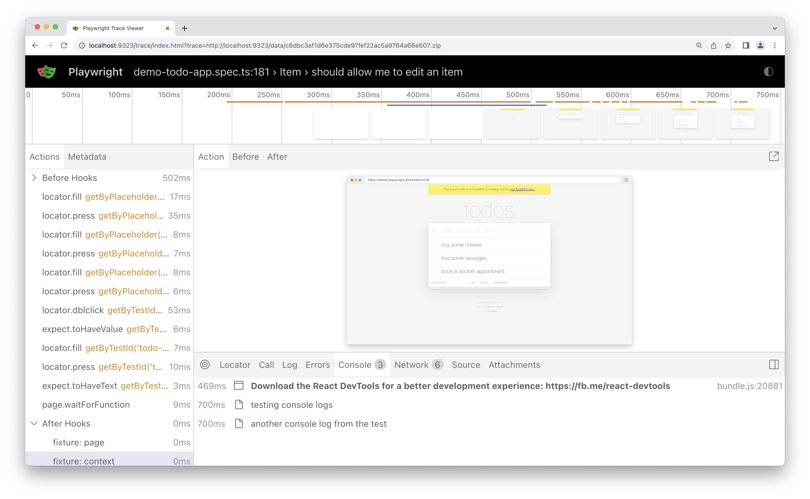
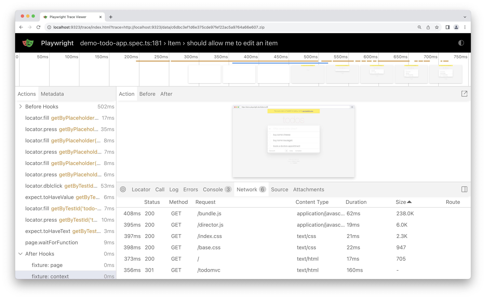
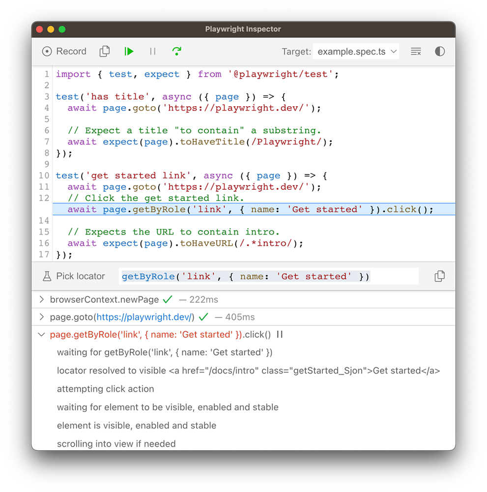
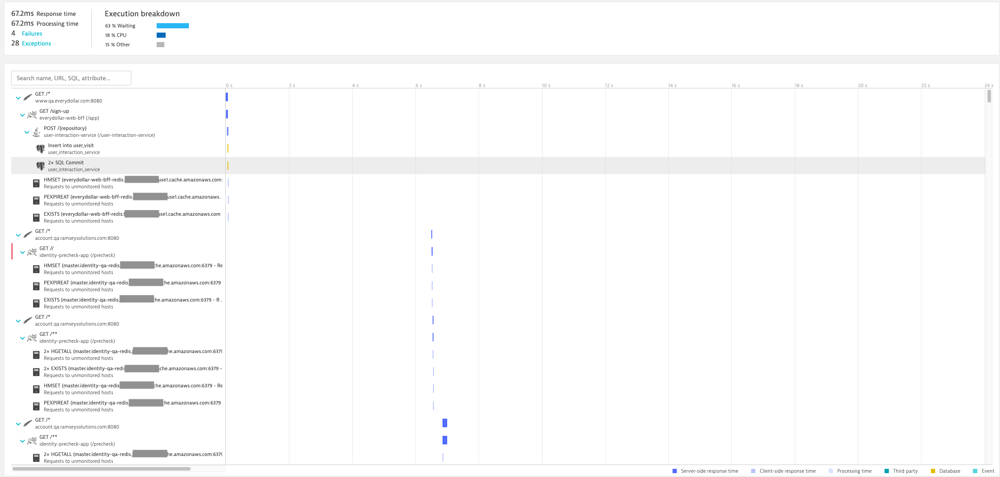
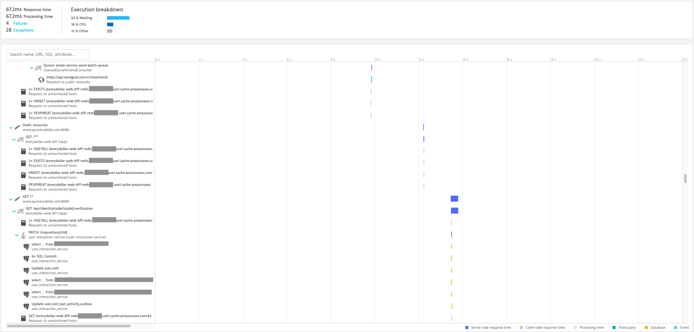
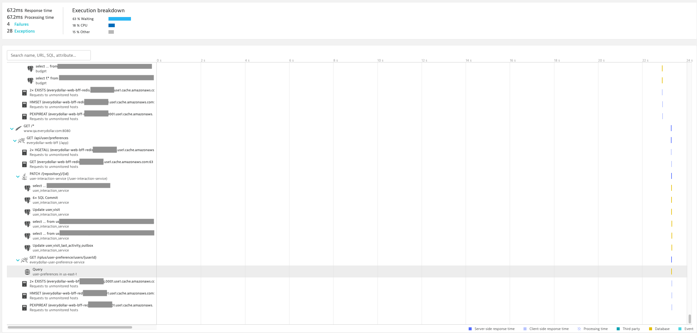

Features you can ship next Monday
Kevin Roe · QA or the Highway 2026
Already writing Playwright tests and want to level up? Right room.
Not a beginner intro. Not a framework deep-dive.
High-leverage features most teams walk right past.
Playwright doesn't talk to the browser through WebDriver. It talks through DevTools Protocol — the same channel Chrome DevTools uses. That's why downloads, network interception, console events, and trace recording are first-class APIs here and not in your Selenium suite.
Selenium 4 added a CDP escape hatch — Chrome-only, outside the WebDriver standard.
Every feature passes the "could you ship this next Monday?" test.
Reduce the typing and maintenance burden.
Every feature is a one-liner add to an existing suite.
addLocatorHandler()
// Cookie banner blocks every test
await page.getByText('Accept all').click();
await page.getByRole('button', { name: 'Subscribe' })
.click(); // fails if banner reappears
// Cookie banner blocks every test
page.getByText("Accept all").click();
page.getByRole(BUTTON, name("Subscribe"))
.click(); // fails if banner reappears
One new popup = copy-pasting dismiss logic into every test that touches that page.
addLocatorHandler()
await page.addLocatorHandler(
page.getByText('Accept all'),
async (locator) => await locator.click()
);
// runs on every navigation, automatically
page.addLocatorHandler(
page.getByText("Accept all"),
locator -> locator.click()
);
// runs on every navigation, automatically
await page.locator(
'table tr:nth-child(3) td:nth-child(2) button')
.click();
page.locator(
"table tr:nth-child(3) td:nth-child(2) button")
.click();
Your selector knows the DOM structure. The frontend team wraps a <div> in a <section> and 30 tests break.
await page.getByRole('row')
.filter({ hasText: 'Widget A' })
.getByRole('button', { name: 'Delete' })
.click();
page.getByRole(ROW)
.filter(new Locator.FilterOptions()
.setHasText("Widget A"))
.getByRole(BUTTON,
new Page.GetByRoleOptions()
.setName("Delete"))
.click();
filter() · and() · or() · nth() · first() · last()
Thread.sleep
await saveButton.click();
await page.waitForTimeout(2000); // 🤞
expect(await successBanner.isVisible()).toBe(true);
// Jest/Vitest — point-in-time, no retry
saveButton.click();
Thread.sleep(2000); // 🤞
assertTrue(successBanner.isVisible());
// JUnit — point-in-time, no retry
Too short = flaky. Too long = slow. Usually both in the same suite.
Thread.sleep
await saveButton.click();
await expect(successBanner)
.toBeVisible(); // retries until true
// The assertion IS the wait.
saveButton.click();
assertThat(successBanner)
.isVisible(); // retries until true
// The assertion IS the wait.
page.waitForResponse()
await saveButton.click();
await page.waitForTimeout(1500); // hoping API responded
await expect(page.getByText('Saved')).toBeVisible();
saveButton.click();
Thread.sleep(1500); // hoping API responded
assertThat(page.getByText("Saved")).isVisible();
You're guessing how long the API takes. The right number today is wrong on a slow CI box tomorrow.
page.waitForResponse()
const resp = await page.waitForResponse(
'**/api/save',
async () => await saveButton.click()
);
// returns the moment the response arrives
expect(resp.status()).toBe(200);
Response resp = page.waitForResponse(
"**/api/save",
() -> saveButton.click()
);
// returns the moment the response arrives
assertThat(resp.status()).isEqualTo(200);
const dl = await page.waitForEvent(
'download',
async () => await exportButton.click());
await dl.saveAs('report.csv');
// now assert on the file
Download dl = page.waitForDownload(
() -> exportButton.click());
dl.saveAs(Paths.get("report.csv"));
// now assert on the file
await page.locator('input[type=file]')
.setInputFiles('test-data/photo.jpg');
page.locator("input[type=file]")
.setInputFiles(
Paths.get("test-data/photo.jpg"));
Most teams don't.
It writes the tests you'd want to write — no AI needed!
Test UI behavior without a working backend.
Mock it, record it, freeze it, disconnect it.
page.route()
await page.route('**/api/products',
route => route.fulfill({
status: 500,
body: 'Internal Server Error'
}));
// Also: abort(), continue() with overrides
page.route("**/api/products",
route -> route.fulfill(
new Route.FulfillOptions()
.setStatus(500)
.setBody("Internal Server Error")));
// Also: abort(), continue() with overrides
routeFromHAR()
// Record once:
const context = await browser.newContext({
recordHar: { path: 'fixtures/api.har' }
});
// Replay forever:
await context.routeFromHAR('fixtures/api.har',
{ notFound: 'fallback' });
// Record once:
context = browser.newContext(
new Browser.NewContextOptions()
.setRecordHarPath(Paths.get("fixtures/api.har")));
// Replay forever:
context.routeFromHAR(Paths.get("fixtures/api.har"),
new BrowserContext.RouteFromHAROptions()
.setNotFound(RouteFromHARNotFound.FALLBACK));
page.clock
// Freeze time at a specific moment
await page.clock.setFixedTime(
new Date('2024-12-31T23:59:55Z'));
await page.goto('https://example.com/countdown');
// Fast-forward 10 seconds
await page.clock.fastForward(10_000);
// Freeze time at a specific moment
page.clock().setFixedTime(
Instant.parse("2024-12-31T23:59:55Z"));
page.navigate("https://example.com/countdown");
// Fast-forward 10 seconds
page.clock().fastForward(10_000);
context.setOffline(true)
await context.setOffline(true);
await page.reload();
await expect(page.getByText("You're offline"))
.toBeVisible();
await context.setOffline(false);
await expect(page.getByText('Back online'))
.toBeVisible();
context.setOffline(true);
page.reload();
assertThat(page.getByText("You're offline"))
.isVisible();
context.setOffline(false);
assertThat(page.getByText("Back online"))
.isVisible();
const ctx = await browser.newContext({
viewport: { width: 390, height: 844 },
userAgent: 'Mozilla/5.0 (iPhone ...)',
locale: 'ja-JP',
timezoneId: 'Asia/Tokyo',
geolocation: { latitude: 35.6595, longitude: 139.7004 },
colorScheme: 'dark',
});
await ctx.grantPermissions(['geolocation']);
BrowserContext ctx = browser.newContext(
new Browser.NewContextOptions()
.setViewportSize(390, 844)
.setUserAgent("Mozilla/5.0 (iPhone ...)")
.setLocale("ja-JP")
.setTimezoneId("Asia/Tokyo")
.setGeolocation(new Geolocation(35.6595, 139.7004))
.setColorScheme(ColorScheme.DARK));
ctx.grantPermissions(List.of("geolocation"));
Flip the direction — use Playwright to reach the backend directly.
Real auth, real session, no UI setup chain.
"Your frontend is the most authoritative documentation your backend has — and Playwright lets you read it at runtime."
const api = await request.newContext({
baseURL: process.env.BASE_URL
});
await api.post('/api/users', {
data: { email: 'test@example.com', plan: 'enterprise' }
});
await page.goto('/dashboard');
APIRequestContext api = playwright.request()
.newContext(new APIRequest.NewContextOptions()
.setBaseURL(System.getenv("BASE_URL")));
api.post("/api/users",
RequestOptions.create().setData(Map.of(
"email", "test@example.com",
"plan", "enterprise")));
page.navigate("/dashboard");
// Global setup — log in, then save:
await context.storageState({ path: 'auth.json' });
// Every test — start already authenticated:
const context = await browser.newContext({
storageState: 'auth.json'
});
// Global setup — log in, then save:
context.storageState(new BrowserContext.StorageStateOptions()
.setPath(Paths.get("auth.json")));
// Every test — start already authenticated:
BrowserContext context = browser.newContext(
new Browser.NewContextOptions()
.setStorageStatePath(Paths.get("auth.json")));
// Scrape CSRF and session cookie
const csrf = await page.evaluate(() => document.querySelector('meta[name="csrf-token"]').content);
const session = (await context.cookies()).find(c => c.name === 'session');
// Set CSRF and Session on the api context
const api = await request.newContext({
baseURL: process.env.BASE_URL,
extraHTTPHeaders: { 'X-CSRF-Token': csrf, 'Cookie': `session=${session.value}` }
});
// Hit the backend directly — no more UI
const resp = await api.get('/api/account/settings');
expect(resp.status()).toBe(200);
// Scrape CSRF and session cookie
String csrf = (String) page.evaluate("document.querySelector('meta[name=\"csrf-token\"]').content");
Optional<Cookie> session = context.cookies().stream()
.filter(c -> c.name.equals("session")).findFirst().orElseThrow();
// Set CSRF and Session on the api context
APIRequestContext api = playwright.request().newContext(
new APIRequest.NewContextOptions()
.setBaseURL(System.getenv("BASE_URL"))
.setExtraHTTPHeaders(Map.of("X-CSRF-Token", csrf, "Cookie", "session=" + session.value)));
// Hit the backend directly — no more UI
APIResponse resp = api.get("/api/account/settings");
assertThat(resp.status()).isEqualTo(200);
Postman can't do this. Curl can't do this.
REST Assured can't do this without a separate browser automation tool like Selenium.
Playwright can — because it's the only tool in your test stack with a real browser and a real HTTP client in the same process.
When a test fails — what do you see?
"Playwright remembers everything so you don't have to."
await context.tracing.start({
screenshots: true,
snapshots: true,
sources: true
});
// ... run your test ...
await context.tracing.stop({ path: 'trace.zip' });
context.tracing().start(
new Tracing.StartOptions()
.setScreenshots(true)
.setSnapshots(true)
.setSources(true));
// ... run your test ...
context.tracing().stop(new Tracing.StopOptions()
.setPath(Paths.get("trace.zip")));
trace.playwright.dev — no install, send a URL to a colleague.





page.pause() +
// Drop this anywhere in a failing test
await page.pause();
// → Inspector opens, test freezes
# Or, from the command line directly
PWDEBUG=1 npx playwright test my-test.spec.ts
// Drop this anywhere in a failing test
page.pause();
// → Inspector opens, test freezes
# Or, from the command line directly
PWDEBUG=1 mvn test -Dtest=MyFailingTest
Step through, inspect the DOM, run JS, pick locators — all against a live paused test.

Save the baseline
// First run — saves baseline to disk
await page.screenshot({
path: 'snapshots/checkout.png'
});
Assert against it
// Built in to @playwright/test
await expect(page).toHaveScreenshot(
'checkout.png');
// Subsequent: pixel-diff
// On failure: expected/actual/diff triple
toHaveScreenshot() handles baseline management automatically — built in to @playwright/test.Save the baseline
// First run — saves baseline to disk
page.screenshot(new Page.ScreenshotOptions()
.setPath(Paths.get(
"snapshots/checkout.png")));
Assert against it
// ~60 lines + one image library
VisualAssert.assertScreenshot(
page, "checkout");
// Subsequent: pixel-diff
// On failure: expected/actual/diff triple
Diff library: com.github.romankh3 / image-comparison
Full source: github.com/kroe761/playwright-demos/tree/main/vrt (plus Python and C#)
// JS console errors
page.on('console', msg => {
if (msg.type() === 'error')
errors.push(msg.text());
});
// Unhandled exceptions
page.on('pageerror', err =>
failures.push(err.message));
// Failed network requests
page.on('requestfailed', req =>
networkFailures.push(
`${req.url()} — ${req.failure()}`));
expect(errors).toHaveLength(0);
// JS console errors
page.onConsoleMessage(msg -> {
if (msg.type().equals("error"))
errors.add(msg.text());
});
// Unhandled exceptions
page.onPageError(err ->
failures.add(err.message()));
// Failed network requests
page.onRequestFailed(req ->
networkFailures.add(
req.url() + " — " + req.failure()));
assertThat(errors).isEmpty();
traceparent —
await context.setExtraHTTPHeaders({
traceparent: `00-${traceId}-${spanId}-01`
});
// Every request now carries this ID.
// APM correlates test run to backend spans.
context.setExtraHTTPHeaders(Map.of(
"traceparent",
"00-" + traceId + "-" + spanId + "-01"
));
// Every request now carries this ID.
// APM correlates test run to backend spans.



That's how to debug failures today.
Here's where Playwright is heading.
Playwright 1.59 shipped a screencast API.
So I built something pretty cool.
// page.screencast — all four bindings
await page.screencast.start({
onFrame: (frame) => ws.send(frame.data), // stream live
path: 'recording.webm', // save locally
quality: 50,
size: { width: 1280, height: 720 },
});
Three processes · ~500 lines total · localhost only
What's the weirdest thing you've automated with it?
github.com/kroe761/playwright-demos